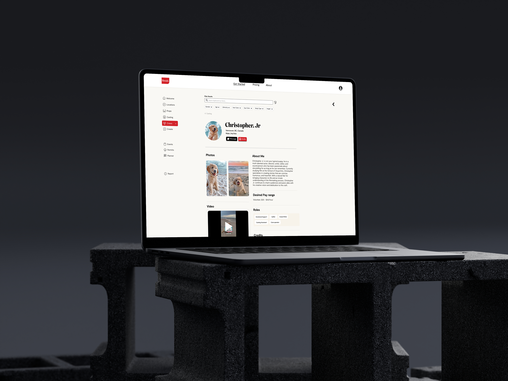
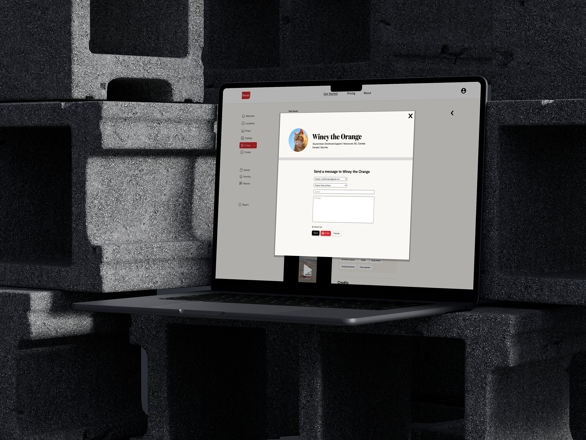

Mosaic's High-Fidelity Crew planning page Mockup
The crew planning page is similar to the cast planning page. Inspired by Backstage, Mosaic users have different profile sections: filmmaker, cast, and crew. This means new filmmakers might see the same person listed as both cast and crew, with different information depending on their role preferences. I created a consistent layout and design for both pages, with the only difference being how users filter selections, such as by skillset or whether they have their own equipment.